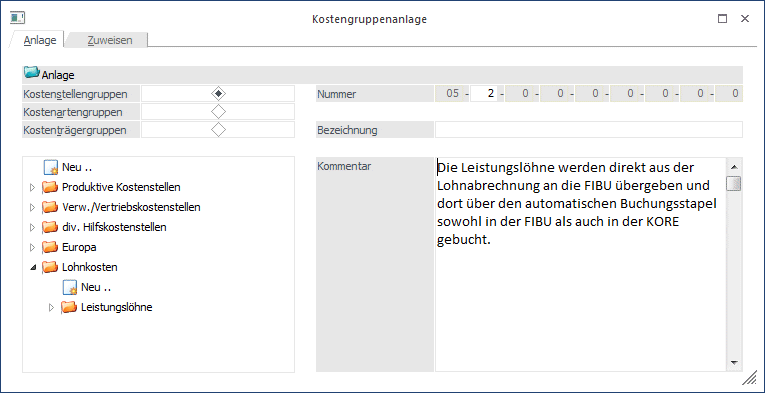
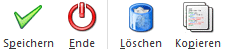
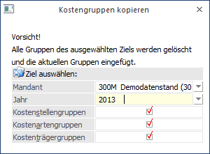

Im Menüpunkt
1 Stammdaten
1 Gruppenstamm
werden die Gruppen für die
ü Kostenstellen
ü Kostenarten
ü Kostenträger
definiert.

Aktivieren Sie jeweils jene Kostengruppe, für die Sie eine neue Gruppe anlegen bzw. eine bestehende editieren möchten.
Im untenstehenden Feld erhalten Sie dann eine Auflistung aller vorhandenen Gruppen des jeweiligen Kostentyps. Wenn eine bestehende Gruppe markiert wird, dann kann diese editiert werden. Wird der Eintrag "Neu.." gewählt, kann eine neue Gruppe des jeweiligen Kostentyps angelegt werden. Dabei wird automatisch in der entsprechenden Ebene die nächste freie Gruppennummer vergeben. Diese Nummer kann aus organisatorischen Gründen auch manuell noch editiert werden (z.B. um die Aufwandskostenartengruppen mit 10 anfangen zu lassen, die Erlöskostenartengruppen mit 20…)
Die Gliederung der Kostengruppe ist hierarchisch und in 9 Ebenen aufgeteilt.
Ø Nummer
Je nachdem auf welcher Ebene Sie sich befinden können Sie die Gruppennummer hinterlegen. Auf der ersten Ebene können Sie im ersten Feld die Nummer eintragen, befinden Sie sich bereits in der Ebene 5 können Sie nur im 5. Feld die Nummer eintragen, die anderen sind in diesem Fall grau markiert. Pro Ebene können bis zu 99 Nummern verwaltet werden.
Ø Bezeichnung
Eingabe einer 40stelligen, alphanumerischen Bezeichnung
Ø Kommentar
Möglichkeit zur Eingabe eines Fließtextes.
Buttons

Ø Speichern
Durch Drücken dieses Buttons werden die neuen Kostengruppen bzw. werden die Änderungen gespeichert.
Ø Ende
Das Fenster wird verlassen ohne vorgenommene Änderungen zu speichern.
Ø Löschen
Mit diesem Button können Sie bereits angelegte Kostengruppen wieder löschen. Markieren Sie die gewünschte Kostengruppe und drücken Sie den Button.
Ø Kopieren
Beim Wählen des Buttons öffnet sich ein Fenster, in dem ein Mandant und ein Wirtschaftsjahr ausgewählt werden kann, auf dem die Gruppen des aktuellen Mandanten kopiert werden sollen. Zusätzlich kann mittels Checkboxen auf Kostenstellengruppen, Kostenartengruppen und Kostenträgergruppen eingeschränkt werden. Beim Kopieren werden die Gruppen des ausgewählten Mandanten gelöscht und die aktuellen Gruppen eingefügt.
